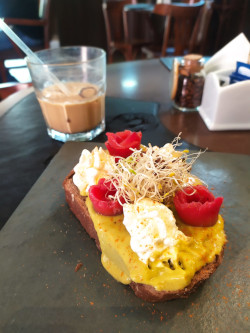
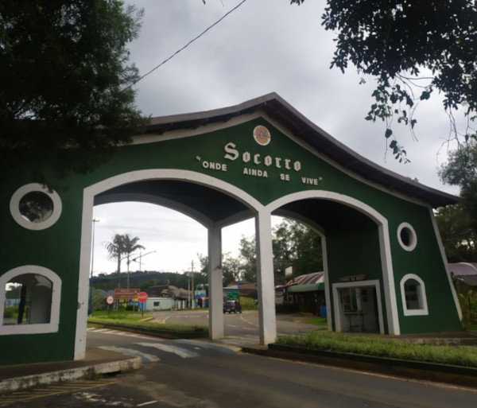

Viajando Pelo Interior - SP

Ilha do Cardoso - Um paraíso no interior.

Nossas experiências pelo interior, com várias dicas e opiniões sobre os lugares que passamos.

Socorro, trilhas e aventuras.

Campos do Jordão - Um de nossos destinos favoritos.